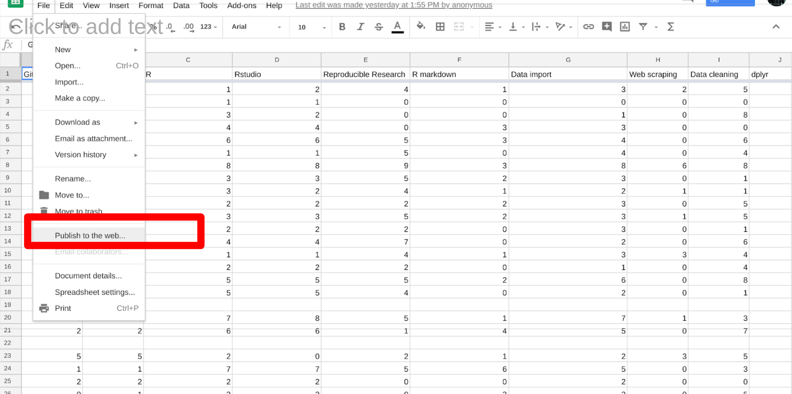
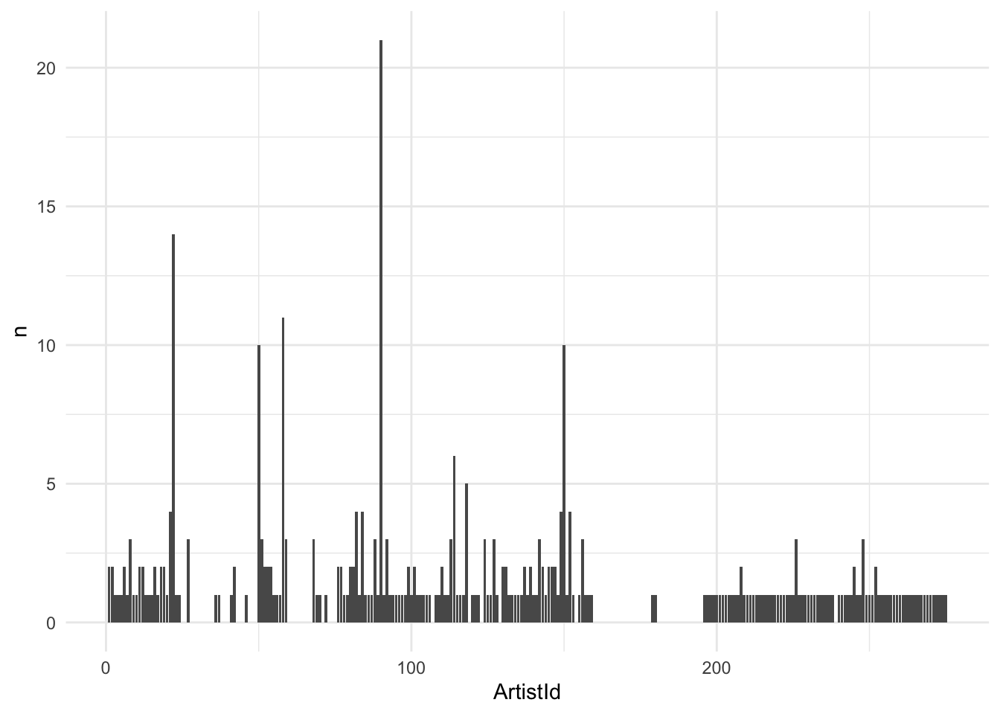
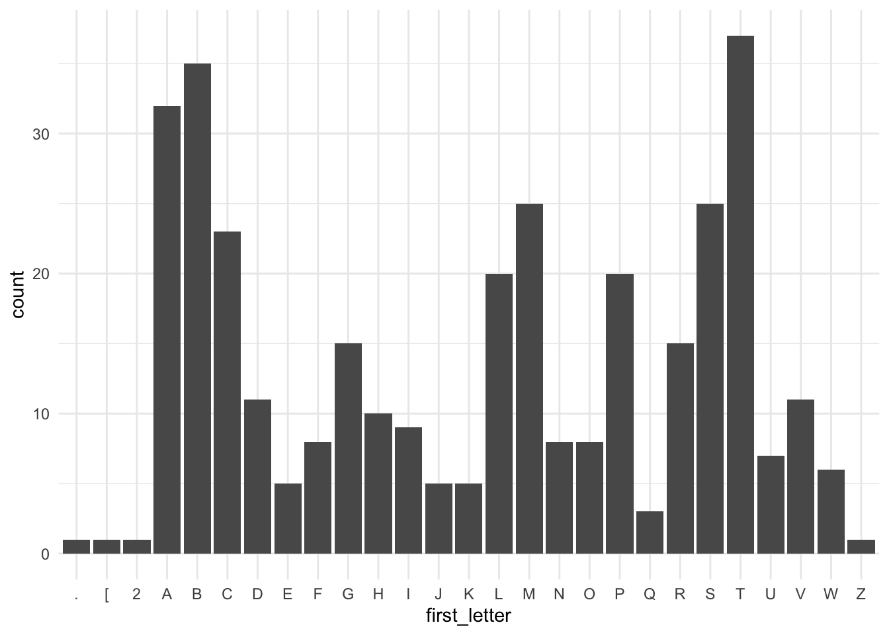

7 Week 6
7.1 Week 6 Learning objectives
At the end of this lesson you will be able to:
- Define a tidy data set
- Name the parts of a shareable data set
- Download data from multiple sources
- Import data from multiple sources
This lecture includes material from Stephanie Hicks lecture on getting data
7.2 What you wish data looked like
The first step in almost every data practical data science project is to collect the data that you will need to perform your analysis, clean the data, and explore the key characteristics of the data set. It has been said in many different ways that 80% of data science is data cleaning - and the other 20% is spent complaining about it…
In Data Science, 80% of time spent prepare data, 20% of time spent complain about need for prepare data.
— Big Data Borat (@BigDataBorat) February 27, 2013
This is unfortunately a truism that hasn’t changed too much despite the best efforts to develop a set of tools that make it easier than ever to collect, manipulate, clean, and explore data.
One important reason is that data collection is often done without data analysis in mind. For example, electronic health record data may be initially collected for the purpose of billing, rather than research. Social media data may be collected to allow communication, but will not be structured for analysis.
This means that a fair amount of work will be transforming data from whatever format you find it in the wild into data that you can use to do analysis. Depending on the type of software you use, you will ultimately need to format the data in different ways.
However, there has been a major effort to standardize a lot of statistical analysis software - particularly in the R programming language - around the idea of “tidy data”. Tidy data was originally defined by Hadley Wickham in a now classic paper. According to Wickham, data is “tidy” if it has the following properties:
- Each variable forms a column.
- Each observation forms a row.
- Each type of observational unit forms a table.
If you have multiple tables, an additional assumption of tidy data that we often use is that:
- Each table contains a set of unique ids that allow observations to be linked
This formalism is extremely useful for a wide range of data types and thanks to significant investment by Rstudio and their extended network, there are now a large number of tools - called the tidyverse - that either facilitate the creation of tidy data or accept tidy data as a default input format.

This is often how you wish data would be formatted. But not always! For example, genomic data is often best analyzed using the Bioconductor suite of software that often assumes three (not-tidy by the above definition) data sets:

Regardless, the first steps in any data science project after the question and audience have been settled are usually around collecting, reformatting, and exploring data. These steps are hyper critical to the success of a data analysis and - much to the chagrin of statisticians - are often very influential on the ultimate results of a data analysis. So it usually makes sense to consider several alternative processing approaches particularly when dealing with complicated or sensitive data collection technolgoies.
7.3 What it actually looks like
So what does data actually look like? As Wickham points out in his Tidy Data paper:
tidy datasets are all alike but every messy dataset is messy in its own way.
It would take entire courses to cover all the ways messy data exists in the wild and the massive number of tools that have been developed to manipulate these data. Here we will simply give an overview of some of the most widely used/common denominator tools. However, your mileage will vary considerably depending on the field you work in.
The most common type of “messy” data that you will encounter, nearly independent of which field you choose to work in, are data in spreadsheets. These are nearly infinite in how ugly they can get.

You may also encounter free text files, sometimes called “flat” files, in a variety of formats. For example a health record may be stored as a plain text file (or in one of several proprietary formats):

Increasingly, data from the web is stored in JSON format. If you collect data directly from application programming interfaces, this is almost certainly how your data will arrive.

Finally, if you work in a subfield with specialized measurement tools you will encounter raw data in a variety of very specific formats. For example, much of the data from high-throughput short-read sequencing appears in the FASTQ format, which may be a 3 gigabyte or more flat or zipped file formatted in a very specific way to report short “reads” and their quality from the genome.

Unfortunately, unless you have your own experimental research lab, start your own company, or lead the data team for your organization, you will be stuck with the raw data that arrives. This can be extremely frustrating, but it is important to get good at managing data that is realistically complex if you want to be a practicing data scientist. If you need to vent, you can always check out the hashtag #otherpeoplesdata on Twitter for commiseration and humor.
squints at the files I was sent #otherpeoplesdata pic.twitter.com/cB3PC6Y0Yk
— Dave Hemprich-Bennett (@hammerheadbat) November 11, 2017
7.4 Background on getting data
Regardless of how the data is formatted, the first step in your data analysis will be to collect the data, organize it, read it into R and format it so that you can perform your analysis. We are going to cover some of the most common ways of getting data here, and this will necessarily be pretty R specific, but this is the step that is most likely to be field specific so you may need to follow tutorials within your field. A good place to start is always “file format extension rstats package” on Google.
7.4.1 Where do data live?
Data lives anywhere and everywhere. Data
might be stored simply in a .csv or .txt
file. Data might be stored in an Excel or
Google Spreadsheet. Data might be stored in
large databases that require users to write
special functions to interact with to extract
the data they are interested in.
For example, you may have heard of the terms
mySQL or MongoDB.
From Wikipedia, MySQL is defined as an open-source relational database management system (RDBMS). Its name is a combination of “My”, the name of co-founder Michael Widenius’s daughter,[7] and “SQL”, the abbreviation for Structured Query Language..
From Wikipeda, MongoDB is defined as “a free and open-source cross-platform document-oriented database program. Classified as a NoSQL database program, MongoDB uses JSON-like documents with schemata.”
So after reading that, we get the sense that there are multiple ways large databases can be structured, data can be formatted and interacted with. In addition, we see that database programs (e.g. MySQL and MongoDB) can also interact with each other.

We will learn more about SQL and JSON in a bit.
7.4.2 Best practices on sharing data
When you are getting data, you should be thinking about how you will organize it, both for your self and for sharing with others. We wrote a paper called: How to share data for collaboration where we provide some guidelines for sharing data:
We highlight the need to provide raw data to the statistician, the importance of consistent formatting, and the necessity of including all essential experimental information and pre-processing steps carried out to the statistician. With these guidelines we hope to avoid errors and delays in data analysis. the importance of consistent formatting, and the necessity of including all essential experimental information and pre-processing steps carried out to the statistician.

The easiest data analyses start with data shared in this format and you will make a lot of friends among your collaborators if you organize data collect in this way. Specifically:
- The raw data (or the rawest form of the data to which you have access)
- Should not have modified, removed or summarized any data; Ran no software on data
- e.g. strange binary file your measurement machine spits out
- e.g. complicated JSON file you scrapped from Twitter Application Programming Interfaces (API)
- e.g. hand-entered numbers you collected looking through a microscope
- A clean data set
- This may or may not be transforming data into a
tidydataset, but possibly yes
- This may or may not be transforming data into a
- A code book describing each variable and its values in the clean or tidy data set.
- More detailed information about the measurements in the data set (e.g. units, experimental design, summary choices made)
- Doesn’t quite fit into the column names in the spreadsheet
- Often reported in a
.md,.txtor Word file.

- An explicit and exact recipe you used to go from 1 -> 2,3

7.5 Relative versus absolute paths
When you are starting a data analysis, you have
already learned about the use of .Rproj files.
When you open up a .Rproj file, RStudio changes
the path (location on your computer) to the .Rproj
location.
After opening up a .Rproj file, you can test this
by
When you open up someone else’s R code or analysis,
you might also see the setwd() function being used
which explicitly tells R to change the absolute path
or absolute location of which directory to move into.
For example, say I want to clone a GitHub repo from Roger, which has 100 R script files, and in every one of those files at the top is:
The problem is, if I want to use his code, I will
need to go and hand-edit every single one of those
paths (C:\Users\Roger\path\only\that\Roger\has)
to the path that I want to use on my computer
or wherever I saved the folder on my computer (e.g.
/Users/Stephanie/Documents/path/only/I/have).
- This is an unsustainable practice.
- I can go in and manually edit the path, but this assumes I know how to set a working directory. Not everyone does.
So instead of absolute paths:
A better idea is to use relative paths:
Within R, an even better idea is to use the here R package will recognize the top-level directory of a Git repo and supports building all paths relative to that. For more on project-oriented workflow suggestions, read this post from Jenny Bryan.
7.5.1 The here package
In her post, she writes
“I suggest organizing each data analysis into a project: a folder on your computer that holds all the files relevant to that particular piece of work.” Instead of using
setwd()at the top your.Ror.Rmdfile, she suggests:
- Organize each logical project into a folder on your computer.
- Make sure the top-level folder advertises itself as such. This can be as simple as having an empty file named
.here. Or, if you use RStudio and/or Git, those both leave characteristic files behind that will get the job done. - Use the
here()function from theherepackage to build the path when you read or write a file. Create paths relative to the top-level directory. - Whenever you work on this project, launch the R process from the project’s top-level directory. If you launch R from the shell,
cdto the correct folder first.
Let’s test this out. We can use getwd() to see our current
working directory path and the files available using list.file()
## [1] "/cloud/project"## [1] "_book" "_bookdown_files" "_bookdown.yml"
## [4] "_output.yml" "01-week_files" "01-week.md"
## [7] "01-week.Rmd" "01-week.utf8.md" "02-week_cache"
## [10] "02-week_files" "02-week.md" "02-week.Rmd"
## [13] "02-week.utf8.md" "03-week.md" "03-week.Rmd"
## [16] "03-week.utf8.md" "04-week.md" "04-week.Rmd"
## [19] "04-week.utf8.md" "05-week_files" "05-week.md"
## [22] "05-week.Rmd" "05-week.utf8.md" "06-week_files"
## [25] "06-week.Rmd" "07-week.Rmd" "08-week_cache"
## [28] "08-week_files" "08-week.Rmd" "09-week.Rmd"
## [31] "10-week_files" "10-week.Rmd" "ads2020.rds"
## [34] "ads2020.Rproj" "data" "docs"
## [37] "fyi.png" "index.md" "index.Rmd"
## [40] "index.utf8.md" "jhsph ads.png" "key.png"
## [43] "Lightbulb.png" "Live-code.png" "logo"
## [46] "private" "README.md" "render1f455586ef0.rds"
## [49] "style.css" "test.png" "Your-turn.png"OK so our current location is in the /cloud/project directory. Using the here package we can see that here points to this base directory.
## here() starts at /cloud/project## [1] "/cloud/project"## [1] "_book" "_bookdown_files" "_bookdown.yml"
## [4] "_output.yml" "01-week_files" "01-week.md"
## [7] "01-week.Rmd" "01-week.utf8.md" "02-week_cache"
## [10] "02-week_files" "02-week.md" "02-week.Rmd"
## [13] "02-week.utf8.md" "03-week.md" "03-week.Rmd"
## [16] "03-week.utf8.md" "04-week.md" "04-week.Rmd"
## [19] "04-week.utf8.md" "05-week_files" "05-week.md"
## [22] "05-week.Rmd" "05-week.utf8.md" "06-week_files"
## [25] "06-week.Rmd" "07-week.Rmd" "08-week_cache"
## [28] "08-week_files" "08-week.Rmd" "09-week.Rmd"
## [31] "10-week_files" "10-week.Rmd" "ads2020.rds"
## [34] "ads2020.Rproj" "data" "docs"
## [37] "fyi.png" "index.md" "index.Rmd"
## [40] "index.utf8.md" "jhsph ads.png" "key.png"
## [43] "Lightbulb.png" "Live-code.png" "logo"
## [46] "private" "README.md" "render1f455586ef0.rds"
## [49] "style.css" "test.png" "Your-turn.png"We can now create a data folder if it doesn’t already exist and see how to create a link to the data directory using the here package:
## [1] "2020-10-05-cameras.csv" "2020-10-05-cameras.xlsx"
## [3] "2020-10-11-cameras.csv" "2020-10-12-cameras.csv"
## [5] "2020-10-21-cameras.csv" "2020-10-26-cameras.csv"
## [7] "2020-11-02-cameras.csv" "cameras.csv"
## [9] "Chinook.sqlite" "repos.json"Now we see that using the here::here() function is a
relative path (relative to the .Rproj file in our home directory. We also see there is a cameras.csv file in
the data folder. Let’s read it into R with the readr package.
## Parsed with column specification:
## cols(
## address = col_character(),
## direction = col_character(),
## street = col_character(),
## crossStreet = col_character(),
## intersection = col_character(),
## `Location 1` = col_character(),
## `2010 Census Neighborhoods` = col_double(),
## `2010 Census Wards Precincts` = col_double(),
## `Zip Codes` = col_double()
## )## # A tibble: 80 x 9
## address direction street crossStreet intersection `Location 1`
## <chr> <chr> <chr> <chr> <chr> <chr>
## 1 GARRIS… E/B "Garr… Wabash Ave "Garrison \… (39.341209,…
## 2 HILLEN… W/B "Hill… Forrest St "Hillen \n … (39.29686, …
## 3 EDMOND… E/B "Edmo… Woodbridge… "Edmonson\n… (39.293453,…
## 4 YORK R… S/B "York… Gitting Ave "York Rd \n… (39.370493,…
## 5 RUSSEL… S/B "Russ… Hamburg St "Russell\n … (39.279819,…
## 6 S MART… S/B "MLK … Pratt St "MLK Jr. Bl… (39.286027,…
## 7 ORLEAN… E/B "Orle… Linwood Ave "Orleans … (39.295866,…
## 8 E NORT… W/B "Nort… Springlake… "Northern P… (39.364311,…
## 9 W COLD… E/B "Cold… Roland Ave "Cold Sprin… (39.343906,…
## 10 E NORT… W/B "Nort… York Road "Northern P… (39.365146,…
## # … with 70 more rows, and 3 more variables: `2010 Census Neighborhoods` <dbl>,
## # `2010 Census Wards Precincts` <dbl>, `Zip Codes` <dbl>We can also ask for the full paths for specific files
## [1] "/cloud/project/data/cameras.csv"The nice thing about the here package is that the above code creates the “correct” path relative to the home directory, regardless of whether the folder is on your computer or not.
7.5.2 Finding and creating files locally
If you want to download a file, one way to use the
file.exists(), dir.create() and list.files()
functions.
file.exists(here("my", "relative", "path"))= logical test if the file existsdir.create(here("my", "relative", "path"))= create a folderlist.files(here("my", "relative", "path"))= list contents of folder
7.5.3 Downloading files
Let’s say we wanted to find out where are all the Fixed Speed Cameras in Baltimore?
To do this, we can use the Open Baltimore API which has information on the locations of fixed speed cameras in Baltimore.
In case you aren’t familiar with fixed speed cameras, the website states:
Motorists who drive aggressively and exceed the posted speed limit by at least 12 miles per hour will receive $40 citations in the mail. These citations are not reported to insurance companies and no license points are assigned. Notification signs will be placed at all speed enforcement locations so that motorists will be aware that they are approaching a speed check zone. The goal of the program is to make the streets of Baltimore safer for everyone by changing aggressive driving behavior. In addition to the eight portable speed enforcement units, the city has retrofitted 50 red light camera locations with the automated speed enforcement technology.
When we go to the website, we see that
the data can be provided to us as a
.csv file. To download in this data,
we can do the following:
file_url <- paste0("https://data.baltimorecity.gov/api/",
"views/dz54-2aru/rows.csv?accessType=DOWNLOAD")
download.file(file_url,
destfile=here("data", "cameras.csv"))
list.files(here("data"))Alternatively, if we want to only download
the file once each time we knit our reproducible
report or homework or project, we can us wrap
the code above into a !file.exists() function.
filename = paste0(Sys.Date(),"-cameras.csv")
if(!file.exists(here("data", filename))){
file_url <- paste0("https://data.baltimorecity.gov/api/",
"views/dz54-2aru/rows.csv?accessType=DOWNLOAD")
todays_date = Sys.Date()
download.file(file_url,
destfile=here("data",filename))
}
date_downloaded = Sys.Date()
date_downloaded## [1] "2020-11-02"## [1] "2020-10-05-cameras.csv" "2020-10-05-cameras.xlsx"
## [3] "2020-10-11-cameras.csv" "2020-10-12-cameras.csv"
## [5] "2020-10-21-cameras.csv" "2020-10-26-cameras.csv"
## [7] "2020-11-02-cameras.csv" "cameras.csv"
## [9] "Chinook.sqlite" "repos.json"Here you will notice I also named the file with the date and/or saved another variable with the downloaded date. The reason is that if you are downloading data directly from the internet, it is likely to update and your results may change. It is a good idea to keep track of the data each time you download.
Always remember to save the date when you download a file from the internet - usually by naming the file with the date. This can prevent reproducibility errors later if the data are updated between when you collect the data and when you
7.6 Reading files
Once you have downloaded a file from the internet the next step is reading the data in so you can explore it. In R there are a number of packages that have been developed for most common data types. We will go over a few of them here.
7.6.1 Reading in CSV files
The easiest type of files to read in R are delimited files (for example comma separated values, csv; or tab separated values, tsv). The cameras file we downloaded is an example of a comma separated file.
We can read cameras.csv
like we have already learned how to do using the
readr::read_csv() function:
## Parsed with column specification:
## cols(
## address = col_character(),
## direction = col_character(),
## street = col_character(),
## crossStreet = col_character(),
## intersection = col_character(),
## `Location 1` = col_character(),
## `2010 Census Neighborhoods` = col_double(),
## `2010 Census Wards Precincts` = col_double(),
## `Zip Codes` = col_double()
## )## # A tibble: 80 x 9
## address direction street crossStreet intersection `Location 1`
## <chr> <chr> <chr> <chr> <chr> <chr>
## 1 GARRIS… E/B "Garr… Wabash Ave "Garrison \… (39.341209,…
## 2 HILLEN… W/B "Hill… Forrest St "Hillen \n … (39.29686, …
## 3 EDMOND… E/B "Edmo… Woodbridge… "Edmonson\n… (39.293453,…
## 4 YORK R… S/B "York… Gitting Ave "York Rd \n… (39.370493,…
## 5 RUSSEL… S/B "Russ… Hamburg St "Russell\n … (39.279819,…
## 6 S MART… S/B "MLK … Pratt St "MLK Jr. Bl… (39.286027,…
## 7 ORLEAN… E/B "Orle… Linwood Ave "Orleans … (39.295866,…
## 8 E NORT… W/B "Nort… Springlake… "Northern P… (39.364311,…
## 9 W COLD… E/B "Cold… Roland Ave "Cold Sprin… (39.343906,…
## 10 E NORT… W/B "Nort… York Road "Northern P… (39.365146,…
## # … with 70 more rows, and 3 more variables: `2010 Census Neighborhoods` <dbl>,
## # `2010 Census Wards Precincts` <dbl>, `Zip Codes` <dbl>A couple of important things to check for with these type of “flat” files are:
- What are the indicators of NA - is it NA? NULL? a space? 99999 (gasp!)?
- Are there any ill-formatted fields, where a whole row accidentally gets read into one cell?
- For text fields, are there any strings that should be factors (or vice-versa)?
7.6.2 Reading in Excel files
In an ideal world everyone would read the outstanding paper on Data Organization in Spreadsheets by Broman and Woo - or at the least their abstract where they lay out the most important formatting rules!
The basic principles are: be consistent, write dates like YYYY-MM-DD, do not leave any cells empty, put just one thing in a cell, organize the data as a single rectangle (with subjects as rows and variables as columns, and with a single header row), create a data dictionary, do not include calculations in the raw data files, do not use font color or highlighting as data, choose good names for things, make backups, use data validation to avoid data entry errors, and save the data in plain text files.
Unfortunately this is rarely the case and spreadsheets are deceptively difficult to import into R when they have formulae, colored fields, hidden sheets and other things. We can download the cameras data in Excel format and read it with the readxl package:
## [1] "2020-10-05-cameras"## # A tibble: 80 x 9
## address direction street crossStreet intersection `Location 1`
## <chr> <chr> <chr> <chr> <chr> <chr>
## 1 GARRIS… E/B "Garr… Wabash Ave "Garrison \… (39.341209,…
## 2 HILLEN… W/B "Hill… Forrest St "Hillen \n … (39.29686, …
## 3 EDMOND… E/B "Edmo… Woodbridge… "Edmonson\n… (39.293453,…
## 4 YORK R… S/B "York… Gitting Ave "York Rd \n… (39.370493,…
## 5 RUSSEL… S/B "Russ… Hamburg St "Russell\n … (39.279819,…
## 6 S MART… S/B "MLK … Pratt St "MLK Jr. Bl… (39.286027,…
## 7 ORLEAN… E/B "Orle… Linwood Ave "Orleans … (39.295866,…
## 8 E NORT… W/B "Nort… Springlake… "Northern P… (39.364311,…
## 9 W COLD… E/B "Cold… Roland Ave "Cold Sprin… (39.343906,…
## 10 E NORT… W/B "Nort… York Road "Northern P… (39.365146,…
## # … with 70 more rows, and 3 more variables: `2010 Census Neighborhoods` <dbl>,
## # `2010 Census Wards Precincts` <dbl>, `Zip Codes` <dbl>However, in practice you might need to look out for:
- Values that are colored - you may need to use something like tidyxl
- Values that appear in only a subset of the spreadsheet - you will need to set sell ranges
- Hidden sheets - you will want to use the excel_sheets function to check for sheet names before you read.
- Formulae - you may need to use tidyxl to discover what they are
- Hidden/calculated values - you may again need to use tidyxl
In practice, I have seen the code to tidy a single Excel file run into thousands of lines of R code.
7.6.3 Reading in JSON Files
JSON (or JavaScript Object Notation) is a file format that stores information in human-readable, organized, logical, easy-to-access manner.
For example, here is what a JSON file looks like:
var stephanie = {
"age" : "33",
"hometown" : "Baltimore, MD",
"gender" : "female",
"cars" : {
"car1" : "Hyundai Elantra",
"car2" : "Toyota Rav4",
"car3" : "Honda CR-V"
}
}Some features about JSON object:
- JSON objects are surrounded by curly braces
{} - JSON objects are written in key/value pairs
- Keys must be strings, and values must be a valid JSON data type (string, number, object, array, boolean)
- Keys and values are separated by a colon
- Each key/value pair is separated by a comma
7.6.4 Using GitHub API
Let’s say we want to use the GitHub API to find out how many of my GitHub repositories have open issues? (we will learn more about using APIs in a minute)
We will use the
jsonlite
R package and the fromJSON() function
to convert from a JSON object to a data frame.
We will read in a JSON file located at https://api.github.com/users/jtleek/repos
github_url = "https://api.github.com/users/jtleek/repos"
library(jsonlite)
jsonData <- fromJSON(github_url)The function fromJSON() has now converted
the JSON file into a data frame with the names:
## [1] "id" "node_id" "name"
## [4] "full_name" "private" "owner"
## [7] "html_url" "description" "fork"
## [10] "url" "forks_url" "keys_url"
## [13] "collaborators_url" "teams_url" "hooks_url"
## [16] "issue_events_url" "events_url" "assignees_url"
## [19] "branches_url" "tags_url" "blobs_url"
## [22] "git_tags_url" "git_refs_url" "trees_url"
## [25] "statuses_url" "languages_url" "stargazers_url"
## [28] "contributors_url" "subscribers_url" "subscription_url"
## [31] "commits_url" "git_commits_url" "comments_url"
## [34] "issue_comment_url" "contents_url" "compare_url"
## [37] "merges_url" "archive_url" "downloads_url"
## [40] "issues_url" "pulls_url" "milestones_url"
## [43] "notifications_url" "labels_url" "releases_url"
## [46] "deployments_url" "created_at" "updated_at"
## [49] "pushed_at" "git_url" "ssh_url"
## [52] "clone_url" "svn_url" "homepage"
## [55] "size" "stargazers_count" "watchers_count"
## [58] "language" "has_issues" "has_projects"
## [61] "has_downloads" "has_wiki" "has_pages"
## [64] "forks_count" "mirror_url" "archived"
## [67] "disabled" "open_issues_count" "license"
## [70] "forks" "open_issues" "watchers"
## [73] "default_branch"How many are private repos? How many have forks?
##
## FALSE
## 30##
## 0 1 2 3 5 6 7 8 9 11 23
## 7 4 2 3 2 1 1 1 1 1 1
## 25 41 61 126 713 228195
## 1 1 1 1 1 1What’s the most popular language?
##
## C++ CSS HTML JavaScript R TeX
## 1 1 9 2 6 1To find out how many repos that I have with open issues, we can just create a table:
##
## 0 1 2 5 6 731
## 22 4 1 1 1 1Whew! Not as many as I thought.
How many do you have?
One important thing to note about data read in JSON format is that it is often “nested”. The way that R handles this is by forcing an entire data frame into a column!
## [1] "data.frame"## login id node_id
## 1 jtleek 1571674 MDQ6VXNlcjE1NzE2NzQ=
## 2 jtleek 1571674 MDQ6VXNlcjE1NzE2NzQ=
## 3 jtleek 1571674 MDQ6VXNlcjE1NzE2NzQ=
## 4 jtleek 1571674 MDQ6VXNlcjE1NzE2NzQ=
## 5 jtleek 1571674 MDQ6VXNlcjE1NzE2NzQ=
## 6 jtleek 1571674 MDQ6VXNlcjE1NzE2NzQ=
## 7 jtleek 1571674 MDQ6VXNlcjE1NzE2NzQ=
## 8 jtleek 1571674 MDQ6VXNlcjE1NzE2NzQ=
## 9 jtleek 1571674 MDQ6VXNlcjE1NzE2NzQ=
## 10 jtleek 1571674 MDQ6VXNlcjE1NzE2NzQ=
## 11 jtleek 1571674 MDQ6VXNlcjE1NzE2NzQ=
## 12 jtleek 1571674 MDQ6VXNlcjE1NzE2NzQ=
## 13 jtleek 1571674 MDQ6VXNlcjE1NzE2NzQ=
## 14 jtleek 1571674 MDQ6VXNlcjE1NzE2NzQ=
## 15 jtleek 1571674 MDQ6VXNlcjE1NzE2NzQ=
## 16 jtleek 1571674 MDQ6VXNlcjE1NzE2NzQ=
## 17 jtleek 1571674 MDQ6VXNlcjE1NzE2NzQ=
## 18 jtleek 1571674 MDQ6VXNlcjE1NzE2NzQ=
## 19 jtleek 1571674 MDQ6VXNlcjE1NzE2NzQ=
## 20 jtleek 1571674 MDQ6VXNlcjE1NzE2NzQ=
## 21 jtleek 1571674 MDQ6VXNlcjE1NzE2NzQ=
## 22 jtleek 1571674 MDQ6VXNlcjE1NzE2NzQ=
## 23 jtleek 1571674 MDQ6VXNlcjE1NzE2NzQ=
## 24 jtleek 1571674 MDQ6VXNlcjE1NzE2NzQ=
## 25 jtleek 1571674 MDQ6VXNlcjE1NzE2NzQ=
## 26 jtleek 1571674 MDQ6VXNlcjE1NzE2NzQ=
## 27 jtleek 1571674 MDQ6VXNlcjE1NzE2NzQ=
## 28 jtleek 1571674 MDQ6VXNlcjE1NzE2NzQ=
## 29 jtleek 1571674 MDQ6VXNlcjE1NzE2NzQ=
## 30 jtleek 1571674 MDQ6VXNlcjE1NzE2NzQ=
## avatar_url gravatar_id
## 1 https://avatars2.githubusercontent.com/u/1571674?v=4
## 2 https://avatars2.githubusercontent.com/u/1571674?v=4
## 3 https://avatars2.githubusercontent.com/u/1571674?v=4
## 4 https://avatars2.githubusercontent.com/u/1571674?v=4
## 5 https://avatars2.githubusercontent.com/u/1571674?v=4
## 6 https://avatars2.githubusercontent.com/u/1571674?v=4
## 7 https://avatars2.githubusercontent.com/u/1571674?v=4
## 8 https://avatars2.githubusercontent.com/u/1571674?v=4
## 9 https://avatars2.githubusercontent.com/u/1571674?v=4
## 10 https://avatars2.githubusercontent.com/u/1571674?v=4
## 11 https://avatars2.githubusercontent.com/u/1571674?v=4
## 12 https://avatars2.githubusercontent.com/u/1571674?v=4
## 13 https://avatars2.githubusercontent.com/u/1571674?v=4
## 14 https://avatars2.githubusercontent.com/u/1571674?v=4
## 15 https://avatars2.githubusercontent.com/u/1571674?v=4
## 16 https://avatars2.githubusercontent.com/u/1571674?v=4
## 17 https://avatars2.githubusercontent.com/u/1571674?v=4
## 18 https://avatars2.githubusercontent.com/u/1571674?v=4
## 19 https://avatars2.githubusercontent.com/u/1571674?v=4
## 20 https://avatars2.githubusercontent.com/u/1571674?v=4
## 21 https://avatars2.githubusercontent.com/u/1571674?v=4
## 22 https://avatars2.githubusercontent.com/u/1571674?v=4
## 23 https://avatars2.githubusercontent.com/u/1571674?v=4
## 24 https://avatars2.githubusercontent.com/u/1571674?v=4
## 25 https://avatars2.githubusercontent.com/u/1571674?v=4
## 26 https://avatars2.githubusercontent.com/u/1571674?v=4
## 27 https://avatars2.githubusercontent.com/u/1571674?v=4
## 28 https://avatars2.githubusercontent.com/u/1571674?v=4
## 29 https://avatars2.githubusercontent.com/u/1571674?v=4
## 30 https://avatars2.githubusercontent.com/u/1571674?v=4
## url html_url
## 1 https://api.github.com/users/jtleek https://github.com/jtleek
## 2 https://api.github.com/users/jtleek https://github.com/jtleek
## 3 https://api.github.com/users/jtleek https://github.com/jtleek
## 4 https://api.github.com/users/jtleek https://github.com/jtleek
## 5 https://api.github.com/users/jtleek https://github.com/jtleek
## 6 https://api.github.com/users/jtleek https://github.com/jtleek
## 7 https://api.github.com/users/jtleek https://github.com/jtleek
## 8 https://api.github.com/users/jtleek https://github.com/jtleek
## 9 https://api.github.com/users/jtleek https://github.com/jtleek
## 10 https://api.github.com/users/jtleek https://github.com/jtleek
## 11 https://api.github.com/users/jtleek https://github.com/jtleek
## 12 https://api.github.com/users/jtleek https://github.com/jtleek
## 13 https://api.github.com/users/jtleek https://github.com/jtleek
## 14 https://api.github.com/users/jtleek https://github.com/jtleek
## 15 https://api.github.com/users/jtleek https://github.com/jtleek
## 16 https://api.github.com/users/jtleek https://github.com/jtleek
## 17 https://api.github.com/users/jtleek https://github.com/jtleek
## 18 https://api.github.com/users/jtleek https://github.com/jtleek
## 19 https://api.github.com/users/jtleek https://github.com/jtleek
## 20 https://api.github.com/users/jtleek https://github.com/jtleek
## 21 https://api.github.com/users/jtleek https://github.com/jtleek
## 22 https://api.github.com/users/jtleek https://github.com/jtleek
## 23 https://api.github.com/users/jtleek https://github.com/jtleek
## 24 https://api.github.com/users/jtleek https://github.com/jtleek
## 25 https://api.github.com/users/jtleek https://github.com/jtleek
## 26 https://api.github.com/users/jtleek https://github.com/jtleek
## 27 https://api.github.com/users/jtleek https://github.com/jtleek
## 28 https://api.github.com/users/jtleek https://github.com/jtleek
## 29 https://api.github.com/users/jtleek https://github.com/jtleek
## 30 https://api.github.com/users/jtleek https://github.com/jtleek
## followers_url
## 1 https://api.github.com/users/jtleek/followers
## 2 https://api.github.com/users/jtleek/followers
## 3 https://api.github.com/users/jtleek/followers
## 4 https://api.github.com/users/jtleek/followers
## 5 https://api.github.com/users/jtleek/followers
## 6 https://api.github.com/users/jtleek/followers
## 7 https://api.github.com/users/jtleek/followers
## 8 https://api.github.com/users/jtleek/followers
## 9 https://api.github.com/users/jtleek/followers
## 10 https://api.github.com/users/jtleek/followers
## 11 https://api.github.com/users/jtleek/followers
## 12 https://api.github.com/users/jtleek/followers
## 13 https://api.github.com/users/jtleek/followers
## 14 https://api.github.com/users/jtleek/followers
## 15 https://api.github.com/users/jtleek/followers
## 16 https://api.github.com/users/jtleek/followers
## 17 https://api.github.com/users/jtleek/followers
## 18 https://api.github.com/users/jtleek/followers
## 19 https://api.github.com/users/jtleek/followers
## 20 https://api.github.com/users/jtleek/followers
## 21 https://api.github.com/users/jtleek/followers
## 22 https://api.github.com/users/jtleek/followers
## 23 https://api.github.com/users/jtleek/followers
## 24 https://api.github.com/users/jtleek/followers
## 25 https://api.github.com/users/jtleek/followers
## 26 https://api.github.com/users/jtleek/followers
## 27 https://api.github.com/users/jtleek/followers
## 28 https://api.github.com/users/jtleek/followers
## 29 https://api.github.com/users/jtleek/followers
## 30 https://api.github.com/users/jtleek/followers
## following_url
## 1 https://api.github.com/users/jtleek/following{/other_user}
## 2 https://api.github.com/users/jtleek/following{/other_user}
## 3 https://api.github.com/users/jtleek/following{/other_user}
## 4 https://api.github.com/users/jtleek/following{/other_user}
## 5 https://api.github.com/users/jtleek/following{/other_user}
## 6 https://api.github.com/users/jtleek/following{/other_user}
## 7 https://api.github.com/users/jtleek/following{/other_user}
## 8 https://api.github.com/users/jtleek/following{/other_user}
## 9 https://api.github.com/users/jtleek/following{/other_user}
## 10 https://api.github.com/users/jtleek/following{/other_user}
## 11 https://api.github.com/users/jtleek/following{/other_user}
## 12 https://api.github.com/users/jtleek/following{/other_user}
## 13 https://api.github.com/users/jtleek/following{/other_user}
## 14 https://api.github.com/users/jtleek/following{/other_user}
## 15 https://api.github.com/users/jtleek/following{/other_user}
## 16 https://api.github.com/users/jtleek/following{/other_user}
## 17 https://api.github.com/users/jtleek/following{/other_user}
## 18 https://api.github.com/users/jtleek/following{/other_user}
## 19 https://api.github.com/users/jtleek/following{/other_user}
## 20 https://api.github.com/users/jtleek/following{/other_user}
## 21 https://api.github.com/users/jtleek/following{/other_user}
## 22 https://api.github.com/users/jtleek/following{/other_user}
## 23 https://api.github.com/users/jtleek/following{/other_user}
## 24 https://api.github.com/users/jtleek/following{/other_user}
## 25 https://api.github.com/users/jtleek/following{/other_user}
## 26 https://api.github.com/users/jtleek/following{/other_user}
## 27 https://api.github.com/users/jtleek/following{/other_user}
## 28 https://api.github.com/users/jtleek/following{/other_user}
## 29 https://api.github.com/users/jtleek/following{/other_user}
## 30 https://api.github.com/users/jtleek/following{/other_user}
## gists_url
## 1 https://api.github.com/users/jtleek/gists{/gist_id}
## 2 https://api.github.com/users/jtleek/gists{/gist_id}
## 3 https://api.github.com/users/jtleek/gists{/gist_id}
## 4 https://api.github.com/users/jtleek/gists{/gist_id}
## 5 https://api.github.com/users/jtleek/gists{/gist_id}
## 6 https://api.github.com/users/jtleek/gists{/gist_id}
## 7 https://api.github.com/users/jtleek/gists{/gist_id}
## 8 https://api.github.com/users/jtleek/gists{/gist_id}
## 9 https://api.github.com/users/jtleek/gists{/gist_id}
## 10 https://api.github.com/users/jtleek/gists{/gist_id}
## 11 https://api.github.com/users/jtleek/gists{/gist_id}
## 12 https://api.github.com/users/jtleek/gists{/gist_id}
## 13 https://api.github.com/users/jtleek/gists{/gist_id}
## 14 https://api.github.com/users/jtleek/gists{/gist_id}
## 15 https://api.github.com/users/jtleek/gists{/gist_id}
## 16 https://api.github.com/users/jtleek/gists{/gist_id}
## 17 https://api.github.com/users/jtleek/gists{/gist_id}
## 18 https://api.github.com/users/jtleek/gists{/gist_id}
## 19 https://api.github.com/users/jtleek/gists{/gist_id}
## 20 https://api.github.com/users/jtleek/gists{/gist_id}
## 21 https://api.github.com/users/jtleek/gists{/gist_id}
## 22 https://api.github.com/users/jtleek/gists{/gist_id}
## 23 https://api.github.com/users/jtleek/gists{/gist_id}
## 24 https://api.github.com/users/jtleek/gists{/gist_id}
## 25 https://api.github.com/users/jtleek/gists{/gist_id}
## 26 https://api.github.com/users/jtleek/gists{/gist_id}
## 27 https://api.github.com/users/jtleek/gists{/gist_id}
## 28 https://api.github.com/users/jtleek/gists{/gist_id}
## 29 https://api.github.com/users/jtleek/gists{/gist_id}
## 30 https://api.github.com/users/jtleek/gists{/gist_id}
## starred_url
## 1 https://api.github.com/users/jtleek/starred{/owner}{/repo}
## 2 https://api.github.com/users/jtleek/starred{/owner}{/repo}
## 3 https://api.github.com/users/jtleek/starred{/owner}{/repo}
## 4 https://api.github.com/users/jtleek/starred{/owner}{/repo}
## 5 https://api.github.com/users/jtleek/starred{/owner}{/repo}
## 6 https://api.github.com/users/jtleek/starred{/owner}{/repo}
## 7 https://api.github.com/users/jtleek/starred{/owner}{/repo}
## 8 https://api.github.com/users/jtleek/starred{/owner}{/repo}
## 9 https://api.github.com/users/jtleek/starred{/owner}{/repo}
## 10 https://api.github.com/users/jtleek/starred{/owner}{/repo}
## 11 https://api.github.com/users/jtleek/starred{/owner}{/repo}
## 12 https://api.github.com/users/jtleek/starred{/owner}{/repo}
## 13 https://api.github.com/users/jtleek/starred{/owner}{/repo}
## 14 https://api.github.com/users/jtleek/starred{/owner}{/repo}
## 15 https://api.github.com/users/jtleek/starred{/owner}{/repo}
## 16 https://api.github.com/users/jtleek/starred{/owner}{/repo}
## 17 https://api.github.com/users/jtleek/starred{/owner}{/repo}
## 18 https://api.github.com/users/jtleek/starred{/owner}{/repo}
## 19 https://api.github.com/users/jtleek/starred{/owner}{/repo}
## 20 https://api.github.com/users/jtleek/starred{/owner}{/repo}
## 21 https://api.github.com/users/jtleek/starred{/owner}{/repo}
## 22 https://api.github.com/users/jtleek/starred{/owner}{/repo}
## 23 https://api.github.com/users/jtleek/starred{/owner}{/repo}
## 24 https://api.github.com/users/jtleek/starred{/owner}{/repo}
## 25 https://api.github.com/users/jtleek/starred{/owner}{/repo}
## 26 https://api.github.com/users/jtleek/starred{/owner}{/repo}
## 27 https://api.github.com/users/jtleek/starred{/owner}{/repo}
## 28 https://api.github.com/users/jtleek/starred{/owner}{/repo}
## 29 https://api.github.com/users/jtleek/starred{/owner}{/repo}
## 30 https://api.github.com/users/jtleek/starred{/owner}{/repo}
## subscriptions_url
## 1 https://api.github.com/users/jtleek/subscriptions
## 2 https://api.github.com/users/jtleek/subscriptions
## 3 https://api.github.com/users/jtleek/subscriptions
## 4 https://api.github.com/users/jtleek/subscriptions
## 5 https://api.github.com/users/jtleek/subscriptions
## 6 https://api.github.com/users/jtleek/subscriptions
## 7 https://api.github.com/users/jtleek/subscriptions
## 8 https://api.github.com/users/jtleek/subscriptions
## 9 https://api.github.com/users/jtleek/subscriptions
## 10 https://api.github.com/users/jtleek/subscriptions
## 11 https://api.github.com/users/jtleek/subscriptions
## 12 https://api.github.com/users/jtleek/subscriptions
## 13 https://api.github.com/users/jtleek/subscriptions
## 14 https://api.github.com/users/jtleek/subscriptions
## 15 https://api.github.com/users/jtleek/subscriptions
## 16 https://api.github.com/users/jtleek/subscriptions
## 17 https://api.github.com/users/jtleek/subscriptions
## 18 https://api.github.com/users/jtleek/subscriptions
## 19 https://api.github.com/users/jtleek/subscriptions
## 20 https://api.github.com/users/jtleek/subscriptions
## 21 https://api.github.com/users/jtleek/subscriptions
## 22 https://api.github.com/users/jtleek/subscriptions
## 23 https://api.github.com/users/jtleek/subscriptions
## 24 https://api.github.com/users/jtleek/subscriptions
## 25 https://api.github.com/users/jtleek/subscriptions
## 26 https://api.github.com/users/jtleek/subscriptions
## 27 https://api.github.com/users/jtleek/subscriptions
## 28 https://api.github.com/users/jtleek/subscriptions
## 29 https://api.github.com/users/jtleek/subscriptions
## 30 https://api.github.com/users/jtleek/subscriptions
## organizations_url
## 1 https://api.github.com/users/jtleek/orgs
## 2 https://api.github.com/users/jtleek/orgs
## 3 https://api.github.com/users/jtleek/orgs
## 4 https://api.github.com/users/jtleek/orgs
## 5 https://api.github.com/users/jtleek/orgs
## 6 https://api.github.com/users/jtleek/orgs
## 7 https://api.github.com/users/jtleek/orgs
## 8 https://api.github.com/users/jtleek/orgs
## 9 https://api.github.com/users/jtleek/orgs
## 10 https://api.github.com/users/jtleek/orgs
## 11 https://api.github.com/users/jtleek/orgs
## 12 https://api.github.com/users/jtleek/orgs
## 13 https://api.github.com/users/jtleek/orgs
## 14 https://api.github.com/users/jtleek/orgs
## 15 https://api.github.com/users/jtleek/orgs
## 16 https://api.github.com/users/jtleek/orgs
## 17 https://api.github.com/users/jtleek/orgs
## 18 https://api.github.com/users/jtleek/orgs
## 19 https://api.github.com/users/jtleek/orgs
## 20 https://api.github.com/users/jtleek/orgs
## 21 https://api.github.com/users/jtleek/orgs
## 22 https://api.github.com/users/jtleek/orgs
## 23 https://api.github.com/users/jtleek/orgs
## 24 https://api.github.com/users/jtleek/orgs
## 25 https://api.github.com/users/jtleek/orgs
## 26 https://api.github.com/users/jtleek/orgs
## 27 https://api.github.com/users/jtleek/orgs
## 28 https://api.github.com/users/jtleek/orgs
## 29 https://api.github.com/users/jtleek/orgs
## 30 https://api.github.com/users/jtleek/orgs
## repos_url
## 1 https://api.github.com/users/jtleek/repos
## 2 https://api.github.com/users/jtleek/repos
## 3 https://api.github.com/users/jtleek/repos
## 4 https://api.github.com/users/jtleek/repos
## 5 https://api.github.com/users/jtleek/repos
## 6 https://api.github.com/users/jtleek/repos
## 7 https://api.github.com/users/jtleek/repos
## 8 https://api.github.com/users/jtleek/repos
## 9 https://api.github.com/users/jtleek/repos
## 10 https://api.github.com/users/jtleek/repos
## 11 https://api.github.com/users/jtleek/repos
## 12 https://api.github.com/users/jtleek/repos
## 13 https://api.github.com/users/jtleek/repos
## 14 https://api.github.com/users/jtleek/repos
## 15 https://api.github.com/users/jtleek/repos
## 16 https://api.github.com/users/jtleek/repos
## 17 https://api.github.com/users/jtleek/repos
## 18 https://api.github.com/users/jtleek/repos
## 19 https://api.github.com/users/jtleek/repos
## 20 https://api.github.com/users/jtleek/repos
## 21 https://api.github.com/users/jtleek/repos
## 22 https://api.github.com/users/jtleek/repos
## 23 https://api.github.com/users/jtleek/repos
## 24 https://api.github.com/users/jtleek/repos
## 25 https://api.github.com/users/jtleek/repos
## 26 https://api.github.com/users/jtleek/repos
## 27 https://api.github.com/users/jtleek/repos
## 28 https://api.github.com/users/jtleek/repos
## 29 https://api.github.com/users/jtleek/repos
## 30 https://api.github.com/users/jtleek/repos
## events_url
## 1 https://api.github.com/users/jtleek/events{/privacy}
## 2 https://api.github.com/users/jtleek/events{/privacy}
## 3 https://api.github.com/users/jtleek/events{/privacy}
## 4 https://api.github.com/users/jtleek/events{/privacy}
## 5 https://api.github.com/users/jtleek/events{/privacy}
## 6 https://api.github.com/users/jtleek/events{/privacy}
## 7 https://api.github.com/users/jtleek/events{/privacy}
## 8 https://api.github.com/users/jtleek/events{/privacy}
## 9 https://api.github.com/users/jtleek/events{/privacy}
## 10 https://api.github.com/users/jtleek/events{/privacy}
## 11 https://api.github.com/users/jtleek/events{/privacy}
## 12 https://api.github.com/users/jtleek/events{/privacy}
## 13 https://api.github.com/users/jtleek/events{/privacy}
## 14 https://api.github.com/users/jtleek/events{/privacy}
## 15 https://api.github.com/users/jtleek/events{/privacy}
## 16 https://api.github.com/users/jtleek/events{/privacy}
## 17 https://api.github.com/users/jtleek/events{/privacy}
## 18 https://api.github.com/users/jtleek/events{/privacy}
## 19 https://api.github.com/users/jtleek/events{/privacy}
## 20 https://api.github.com/users/jtleek/events{/privacy}
## 21 https://api.github.com/users/jtleek/events{/privacy}
## 22 https://api.github.com/users/jtleek/events{/privacy}
## 23 https://api.github.com/users/jtleek/events{/privacy}
## 24 https://api.github.com/users/jtleek/events{/privacy}
## 25 https://api.github.com/users/jtleek/events{/privacy}
## 26 https://api.github.com/users/jtleek/events{/privacy}
## 27 https://api.github.com/users/jtleek/events{/privacy}
## 28 https://api.github.com/users/jtleek/events{/privacy}
## 29 https://api.github.com/users/jtleek/events{/privacy}
## 30 https://api.github.com/users/jtleek/events{/privacy}
## received_events_url type site_admin
## 1 https://api.github.com/users/jtleek/received_events User FALSE
## 2 https://api.github.com/users/jtleek/received_events User FALSE
## 3 https://api.github.com/users/jtleek/received_events User FALSE
## 4 https://api.github.com/users/jtleek/received_events User FALSE
## 5 https://api.github.com/users/jtleek/received_events User FALSE
## 6 https://api.github.com/users/jtleek/received_events User FALSE
## 7 https://api.github.com/users/jtleek/received_events User FALSE
## 8 https://api.github.com/users/jtleek/received_events User FALSE
## 9 https://api.github.com/users/jtleek/received_events User FALSE
## 10 https://api.github.com/users/jtleek/received_events User FALSE
## 11 https://api.github.com/users/jtleek/received_events User FALSE
## 12 https://api.github.com/users/jtleek/received_events User FALSE
## 13 https://api.github.com/users/jtleek/received_events User FALSE
## 14 https://api.github.com/users/jtleek/received_events User FALSE
## 15 https://api.github.com/users/jtleek/received_events User FALSE
## 16 https://api.github.com/users/jtleek/received_events User FALSE
## 17 https://api.github.com/users/jtleek/received_events User FALSE
## 18 https://api.github.com/users/jtleek/received_events User FALSE
## 19 https://api.github.com/users/jtleek/received_events User FALSE
## 20 https://api.github.com/users/jtleek/received_events User FALSE
## 21 https://api.github.com/users/jtleek/received_events User FALSE
## 22 https://api.github.com/users/jtleek/received_events User FALSE
## 23 https://api.github.com/users/jtleek/received_events User FALSE
## 24 https://api.github.com/users/jtleek/received_events User FALSE
## 25 https://api.github.com/users/jtleek/received_events User FALSE
## 26 https://api.github.com/users/jtleek/received_events User FALSE
## 27 https://api.github.com/users/jtleek/received_events User FALSE
## 28 https://api.github.com/users/jtleek/received_events User FALSE
## 29 https://api.github.com/users/jtleek/received_events User FALSE
## 30 https://api.github.com/users/jtleek/received_events User FALSEFinally, I will leave you with a few other examples of using GitHub API:
- How long does it take to close a GitHub Issue in the
dplyrpackage? - How to retrieve all commits for a branch
- Getting my GitHub Activity

7.7 Google Sheets
Google Sheets is increasingly used to create and store data. It is one of the most useful distributed data collection services. Not surprisingly, there are a number of tools that have been developed for reading data from Google Sheets. If the data are not protected, then you can make them public on the web and read them without authentication:

library(googlesheets4)
gs4_deauth()
cameras = googlesheets4::read_sheet("https://docs.google.com/spreadsheets/d/16gHHSHCIg7r4NRu_8dbCaZzjkEChh799nyujXbiDVPg/edit?usp=sharing")## Reading from "2020-10-05-cameras"## Range "2020-10-05-cameras"## # A tibble: 80 x 9
## address direction street crossStreet intersection `Location 1`
## <chr> <chr> <chr> <chr> <chr> <chr>
## 1 GARRIS… E/B Garri… Wabash Ave "Garrison \… (39.341209,…
## 2 HILLEN… W/B Hillen Forrest St "Hillen \n … (39.29686, …
## 3 EDMOND… E/B Edmon… Woodbridge… "Edmonson\n… (39.293453,…
## 4 YORK R… S/B York … Gitting Ave "York Rd \n… (39.370493,…
## 5 RUSSEL… S/B Russe… Hamburg St "Russell\n … (39.279819,…
## 6 S MART… S/B MLK J… Pratt St "MLK Jr. Bl… (39.286027,…
## 7 ORLEAN… E/B Orlea… Linwood Ave "Orleans … (39.295866,…
## 8 E NORT… W/B North… Springlake… "Northern P… (39.364311,…
## 9 W COLD… E/B Cold … Roland Ave "Cold Sprin… (39.343906,…
## 10 E NORT… W/B North… York Road "Northern P… (39.365146,…
## # … with 70 more rows, and 3 more variables: `2010 Census Neighborhoods` <dbl>,
## # `2010 Census Wards Precincts` <dbl>, `Zip Codes` <dbl>You can also read private Google Sheets if you have permission. You will first need to authenticate with your Google account:
library(googlesheets4)
gs4_auth()
cameras = googlesheets4::read_sheet("https://docs.google.com/spreadsheets/d/16gHHSHCIg7r4NRu_8dbCaZzjkEChh799nyujXbiDVPg/edit?usp=sharing")
camerasThere is a lot more you can do with the googlesheets4 package including navigating the sheets you have access to, identifying them by id, and much more. All of the same caveats apply as with an Excel spreadsheet. These sheets can be just as complicated and hard to manage.
7.8 Databases
If you plan to do data science in industry, one of the most useful things you can learn about is how to acces, manipulate, and use data that is stored in databases. We don’t have time to cover all of the varieties of databases in this course. So we will focus on relational databases. These databases include tables that have pre-defined relationships.
There are several ways to query databases in R. Here we will use sqllite as an example of the type of database you can access in R.
First, we will download a .sqlite database. This is a
portable version of a SQL database. For our
purposes, we will use the
chinook sqlite database here. The database represents a
“digital media store, including tables for artists,
albums, media tracks, invoices and customers”.
From the Readme.md file:
Sample Data
Media related data was created using real data from an iTunes Library. It is possible for you to use your own iTunes Library to generate the SQL scripts, see instructions below. Customer and employee information was manually created using fictitious names, addresses that can be located on Google maps, and other well formatted data (phone, fax, email, etc.). Sales information is auto generated using random data for a four year period.
if(!file.exists(here("data", "Chinook.sqlite"))){
file_url <- paste0("https://github.com/lerocha/chinook-database/raw/master/ChinookDatabase/DataSources/Chinook_Sqlite.sqlite")
download.file(file_url,
destfile=here("data", "Chinook.sqlite"))
}
list.files(here("data"))## [1] "2020-10-05-cameras.csv" "2020-10-05-cameras.xlsx"
## [3] "2020-10-11-cameras.csv" "2020-10-12-cameras.csv"
## [5] "2020-10-21-cameras.csv" "2020-10-26-cameras.csv"
## [7] "2020-11-02-cameras.csv" "cameras.csv"
## [9] "Chinook.sqlite" "repos.json"The main workhorse packages that we will use are
the DBI and dplyr packages. Let’s look at the
DBI::dbConnect() help file
So we need a driver and one example is RSQLite::SQLite().
Let’s look at the help file
Ok so with RSQLite::SQLite() and DBI::dbConnect()
we can connect to a SQLite database. Let’s try that
with our Chinook.sqlite file that we downloaded. Chinook.sqlite
## <SQLiteConnection>
## Path: /cloud/project/data/Chinook.sqlite
## Extensions: TRUESo we have opened up a connection with the SQLite database. You can use a similar process with most common database backends, both locally on your computer and by connecting to databases on the cloud like BigQuery or RedShift.
Next, we can see what tables are available in the database
using the dbListTables() function:
## [1] "Album" "Artist" "Customer" "Employee"
## [5] "Genre" "Invoice" "InvoiceLine" "MediaType"
## [9] "Playlist" "PlaylistTrack" "Track"From RStudio’s website, there are several ways to interact with
SQL Databases. One of the simplest ways that we will use here is
to leverage the dplyr framework.
"The
dplyrpackage now has a generalized SQL backend for talking to databases, and the newdbplyrpackage translates R code into database-specific variants. As of this writing, SQL variants are supported for the following databases: Oracle, Microsoft SQL Server, PostgreSQL, Amazon Redshift, Apache Hive, and Apache Impala. More will follow over time. So if we want to query a SQL databse withdplyr, the benefit of usingdbplyris: "You can write your code indplyrsyntax, anddplyrwill translate your code into SQL. There are several benefits to writing queries indplyrsyntax: you can keep the same consistent language both for R objects and database tables, no knowledge of SQL or the specific SQL variant is required, and you can take advantage of the fact thatdplyruses lazy evaluation. Let's take a closer look at theconn` database that we just connected to:
##
## Attaching package: 'dplyr'## The following objects are masked from 'package:stats':
##
## filter, lag## The following objects are masked from 'package:base':
##
## intersect, setdiff, setequal, union##
## Attaching package: 'dbplyr'## The following objects are masked from 'package:dplyr':
##
## ident, sql## src: sqlite 3.33.0 [/cloud/project/data/Chinook.sqlite]
## tbls: Album, Artist, Customer, Employee, Genre, Invoice, InvoiceLine,
## MediaType, Playlist, PlaylistTrack, TrackYou can think of the multiple tables similar to having multiple worksheets in a spreadsheet.
Let’s try interacting with one.
7.8.1 Querying with dplyr syntax
First, let’s look at the first ten rows in the
Album table.
## # Source: lazy query [?? x 3]
## # Database: sqlite 3.33.0 [/cloud/project/data/Chinook.sqlite]
## AlbumId Title ArtistId
## <int> <chr> <int>
## 1 1 For Those About To Rock We Salute You 1
## 2 2 Balls to the Wall 2
## 3 3 Restless and Wild 2
## 4 4 Let There Be Rock 1
## 5 5 Big Ones 3
## 6 6 Jagged Little Pill 4
## 7 7 Facelift 5
## 8 8 Warner 25 Anos 6
## 9 9 Plays Metallica By Four Cellos 7
## 10 10 Audioslave 8The output looks just like a data.frame that we are familiar
with. But it’s important to know that it’s not really
a dataframe. For example, what about if we use
the dim() function?
## [1] NA 3Interesting! We see that the number of rows returned is NA.
This is because these functions are different than operating
on datasets in memory (e.g. loading data into memory using
read_csv()). Instead, dplyr communicates differently
with a SQLite database.
Let’s consider our example. If we were to use straight SQL,
the following SQL query returns the first 10 rows
from the Album table:
In the background, dplyr does the following:
- translates your R code into SQL
- submits it to the database
- translates the database’s response into an R data frame
To better understand the dplyr code, we can use the
show_query() function:
## <SQL>
## SELECT *
## FROM `Album`
## LIMIT 10This is nice because instead of having to write the
SQL query ourself, we can just use the dplyr and R
syntax that we are used to.
However, the downside is that dplyr never gets to see the
full Album table. It only sends our query to the database,
waits for a response and returns the query. However, in this
way we can interact with large datasets!
Many of the usual dplyr functions are available too:
select()filter()summarize()
and many join functions.
Ok let’s try some of the functions out. First, let’s count how many albums each artist has made.
## # Source: lazy query [?? x 2]
## # Database: sqlite 3.33.0 [/cloud/project/data/Chinook.sqlite]
## ArtistId n
## <int> <int>
## 1 1 2
## 2 2 2
## 3 3 1
## 4 4 1
## 5 5 1
## 6 6 2
## 7 7 1
## 8 8 3
## 9 9 1
## 10 10 1Next, let’s plot it.
library(ggplot2)
tbl(conn, "Album") %>%
group_by(ArtistId) %>%
summarize(n = count(ArtistId)) %>%
arrange(desc(n)) %>%
ggplot(aes(x = ArtistId, y = n)) +
geom_bar(stat = "identity")
Let’s also extract the first letter from each album and plot the frequency of each letter.
tbl(conn, "Album") %>%
mutate(first_letter = str_sub(Title, end = 1)) %>%
ggplot(aes(first_letter)) +
geom_bar()
7.8.2 Delayed execution
One important feature of dbplyr for large data sets is delayed execution. From the dbplyr documentation:
- It never pulls data into R unless you explicitly ask for it.
- It delays doing any work until the last possible moment: it collects together everything you want to do and then sends it to the database in one step.
This means that when you perform a command like this
Then the database hasn’t been touched! It won’t be until you run the command. Even then it will only pull the first 10 rows of the result once you ask to see the data
## # Source: table<Album> [?? x 3]
## # Database: sqlite 3.33.0 [/cloud/project/data/Chinook.sqlite]
## AlbumId Title ArtistId
## <int> <chr> <int>
## 1 1 For Those About To Rock We Salute You 1
## 2 2 Balls to the Wall 2
## 3 3 Restless and Wild 2
## 4 4 Let There Be Rock 1
## 5 5 Big Ones 3
## 6 6 Jagged Little Pill 4
## 7 7 Facelift 5
## 8 8 Warner 25 Anos 6
## 9 9 Plays Metallica By Four Cellos 7
## 10 10 Audioslave 8
## # … with more rowsIf you want to pull all of the data into R, a good idea is to first check and see how many rows it has. You can do this with the count function
## # Source: lazy query [?? x 1]
## # Database: sqlite 3.33.0 [/cloud/project/data/Chinook.sqlite]
## n
## <int>
## 1 347In this case it is a small number, so we can pull all of the data into memory in R using the collect function - the resulting data frame has the same number of rows as we discovered using the count function.
## # A tibble: 347 x 3
## AlbumId Title ArtistId
## <int> <chr> <int>
## 1 1 For Those About To Rock We Salute You 1
## 2 2 Balls to the Wall 2
## 3 3 Restless and Wild 2
## 4 4 Let There Be Rock 1
## 5 5 Big Ones 3
## 6 6 Jagged Little Pill 4
## 7 7 Facelift 5
## 8 8 Warner 25 Anos 6
## 9 9 Plays Metallica By Four Cellos 7
## 10 10 Audioslave 8
## # … with 337 more rowsWhen working with databases it is a good idea to think about ways you can make the data smaller before pulling it into memory. One is through grouping and aggregating as we showed above
## # A tibble: 204 x 2
## ArtistId n
## <int> <int>
## 1 1 2
## 2 2 2
## 3 3 1
## 4 4 1
## 5 5 1
## 6 6 2
## 7 7 1
## 8 8 3
## 9 9 1
## 10 10 1
## # … with 194 more rowsThinking cleverly about how to make data small in database takes a certain way of thinking, but with practice can make your data analysis much easier. Some packages have been developed that automatically push certain comptuations to the database for you including:
- dbplot for making plots in database
- modeldb for running certain types of models (like regression) in database
Some important things to consider when dealing with data in databases are:
- Making sure you count your data before you pull it down into a local environment.
- Listing and looking through each table. Sometimes called database spelunking this is an important step before using any database
- Understanding whether it costs more computationally to do an analysis mostly in the database or mostly on your computer. This will involve tradeoffs depending on the size of the data and your local computing power.
- Ensuring you have proper authentication to access the databases and tables that you care about.
7.9 APIs
Application Programming Interfaces (or APIs) are a way to access data through a structured URL over the web. Most social media companies provide their data to the public through this format. But there are a wide range of other government entities, companies, and non-profits that make their data available via an API.
The reason companies distribute data this way is because they can control what and how much data you download. Most have rate limits - the number of calls or amount of data you can pull per unit time. You need to respect these limits or your data collection will be blocked.
When you want to collect data from an API, the first thing you should check and see is if someone built a package for that API. For most common APIs a package will exist (for example rtweet or Rfacebook). If they don’t exist, you can use the httr R package to build your own access to an API.
Regardless of whether you are using an R package or building your own, you should:
- Read the developer docs - look for rate limits, licenses, and other information about how to use the API appropriately.
- Look at the worked examples, to figure out how to use the API. Each one is different, but all have a similar, structured URL approach.
Let’s dissect an example of an API url. If you go to this url: https://api.github.com/search/repositories?q=created:2014-08-13+language:r+-user:cran&type you will get a bunch of JSON - this is data from the Github API. Let’s break down each part of this url:
- https://api.github.com/search/repositories - This is the base url that tells us we will be asking for repository data
- ?q= - This defines the “query”, or the search, we will be doing
- created:2014-08-13 - This tells us we will search for repos created on 2014-08-13
- This is like an "and" for the search
- language:r - This tells us we are searching for only R repos
- -user:cran&type - This tells us we don’t want any repos created by cran (to avoid explosion of repos - cran has a lot!)
Using the httr package we can access these data directly using the GET command:
library(httr)
query_url = "https://api.github.com/search/repositories?q=created:2014-08-13+language:r+-user:cran"
req = GET(query_url)
req## Response [https://api.github.com/search/repositories?q=created:2014-08-13+language:r+-user:cran]
## Date: 2020-11-02 11:58
## Status: 200
## Content-Type: application/json; charset=utf-8
## Size: 179 kB
## {
## "total_count": 77,
## "incomplete_results": false,
## "items": [
## {
## "id": 22907468,
## "node_id": "MDEwOlJlcG9zaXRvcnkyMjkwNzQ2OA==",
## "name": "computel",
## "full_name": "lilit-nersisyan/computel",
## "private": false,
## ...The resulting request will give us the status, the date, and information about the content. We can use the content function to extract the data- in this case a nested list:
## [1] "total_count" "incomplete_results" "items"Not all APIs are open like this Github API. You may have to create a developer account and authenticate before accessing the data. You can usually figure this out by following the developer docs on each individual site.
Some things to keep in mind when you are downloading data from APIs are the following:
- Pay attention to the terms of service and developer docs
- Respect rate limits so you won’t be blocked
- Think carefully about what data you pull and share, it is very easy to collect data people wouldn’t want shared
- Remember the data are constantly updating since they are from the web, so you might want to save versions of the data
- Remember that the data are only the version that the company/government/entity wants to expose, so may have errors or issues due to translation.
7.10 Webscraping
Do we want to purchase a book on Amazon?
Next we are going to learn about what to do if your data is on a website (XML or HTML) formatted to be read by humans instead of R.
We will use the (really powerful) rvest R package to do what is often called “scraping data from the web”.
Before we do that, we need to set up a few things:
- SelectorGadget tool
- rvest and SelectorGadget guide
- Awesome tutorial for CSS Selectors
- Introduction to stringr
- Regular Expressions/stringr tutorial
- Regular Expression online tester- explains a regular expression as it is built, and confirms live whether and how it matches particular text.
We’re going to be scraping this page: it just contains the (first page of) reviews of the ggplot2 book by Hadley Wickham.
url <- "http://www.amazon.com/ggplot2-Elegant-Graphics-Data-Analysis/product-reviews/0387981403/ref=cm_cr_dp_qt_see_all_top?ie=UTF8&showViewpoints=1&sortBy=helpful"We use the rvest package to download this page.
## Loading required package: xml2Now h is an xml_document that contains the contents of the page:
## {html_document}
## <html lang="en-us" class="a-no-js" data-19ax5a9jf="dingo">
## [1] <head>\n<meta http-equiv="Content-Type" content="text/html; charset=UTF-8 ...
## [2] <body>\n<span id="cr-state-object" data-state='{"asin":"0387981403","devi ...How can you actually pull the interesting information out? That’s where CSS selectors come in.
7.10.1 CSS Selectors
CSS selectors are a way to specify a subset of nodes (that is, units of content) on a web page (e.g., just getting the titles of reviews). CSS selectors are very powerful and not too challenging to master- here’s a great tutorial But honestly you can get a lot done even with very little understanding, by using a tool called SelectorGadget.
Install the SelectorGadget on your web browser. (If you use Chrome you can use the Chrome extension, otherwise drag the provided link into your bookmarks bar). Here’s a guide for how to use it with rvest to “point-and-click” your way to a working selector.
For example, if you just wanted the titles,
you’ll end up with a selector that looks
something like .a-text-bold span. You can pipe
your HTML object along with that selector
into the html_nodes function, to select
just those nodes:
## {xml_nodeset (10)}
## [1] <span>Must-have reference for R graphics</span>
## [2] <span>Still a great package and highly worth learning - but the text is ...
## [3] <span>Excellent</span>
## [4] <span>Nice resource, but already out of date</span>
## [5] <span>The best guide to the best graphics (I think) out there.</span>
## [6] <span>Graphing in R</span>
## [7] <span>Excellent content, poor adaptation to kindle</span>
## [8] <span>Excellent R resource for the Kindle</span>
## [9] <span>Great book, outdated</span>
## [10] <span>Indispensable resource for ggplot2 users</span>But you need the text from each of these, not the full tags. Pipe to the html_text function to pull these out:
## [1] "Must-have reference for R graphics"
## [2] "Still a great package and highly worth learning - but the text is getting quite out of date."
## [3] "Excellent"
## [4] "Nice resource, but already out of date"
## [5] "The best guide to the best graphics (I think) out there."
## [6] "Graphing in R"
## [7] "Excellent content, poor adaptation to kindle"
## [8] "Excellent R resource for the Kindle"
## [9] "Great book, outdated"
## [10] "Indispensable resource for ggplot2 users"Now we’ve extracted something useful! Similarly, let’s grab the format (hardcover or paperback). Some experimentation with SelectorGadget shows it’s:
## character(0)Now, we may be annoyed that it always
starts with Format:. Let’s introduce
the stringr package.
formats <- h %>%
html_nodes(".a-size-mini.a-color-secondary") %>%
html_text() %>%
stringr::str_replace("Format: ", "")
formats## character(0)We could do similar exercise for extracting the number of stars and whether or not someone found a review useful. This would help us decide if we were interested in purchasing the book!
Webscraping is the opposite of APIs in some sense. Anything that is public on a website can technically be webscraped using things like the rvest package. However, that doesn’t mean it is always ethical or a good idea to do so. One extreme example is a student who published the private OkCupid data of 70,000 people he had scraped from the web. This included private information, including sexual preferences, pictures, and intimate details from the profiles. At the time the way he scraped the data did not violate the terms of service of the website, but the way the data were collected and shared were ethically disasterous. So when scraping data think very carefully about the ethics and purpose of your data collection.
Some other things to be aware of with data scraping are
1.Most websites have a file called robots.txt. You can see the one for Google here this file tells you what it is ok to scrape and not.
Some companies will block you if you try to scrape their website. In one case a student got his whole university blocked from accessing certain journals by webscraping!
The data will certainly update frequently if you scrape it from a website.
Some companies consider data on their websites proprietary and you can find yourself in legal battles if you collect and use them for commercial purposes.
7.11 Google-ing
It seems silly to talk about using Google in an “advanced” course. But for things like getting data you will be spending a lot of time Googling. As packages evolve super rapidly, you will often want to check your workflows and make sure they haven’t gone out of date. For example, since the last time I taught this course, the googlesheets package has been replaced by googlesheets4, among other changes!
A good default move when embarking on a new data collection exercise is to Google for workflows for the thing you want. I generally use variations on:
- “rstats reading data type x”
- “rstats tutorial on data type x”
- “stack overflow data type x”
As a place to get started, but I also use Google by copying and pasting exact error messages I run into with any new package. I point this out primarily to make sure you know that it is not only acceptable, but encouraged to use the internet and Google as a resource when figuring out how to handle new data sets.
7.12 Additional Resources
- An outstanding JSM tutorial on webscraping
- The databases using Rstudio website
- Relational data section of R for Data Science
- Some of my lecture slides on webscraping and APIs
- Some of my lecture slides on databases
7.13 Homework
- Template Repo: https://github.com/advdatasci/homework6
- Repo Name: homework6-ind-yourgithubusername
- Pull Date: 2020/10/12 9:00AM Baltimore Time